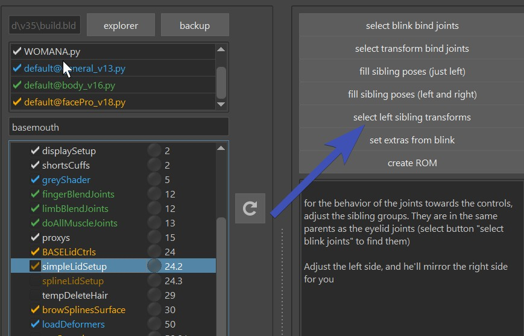
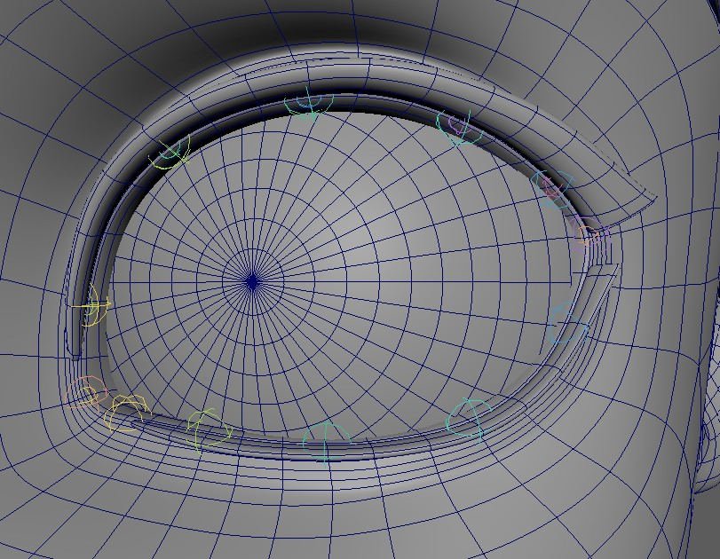
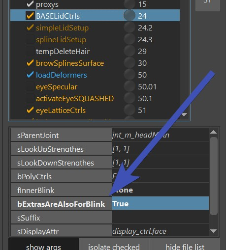
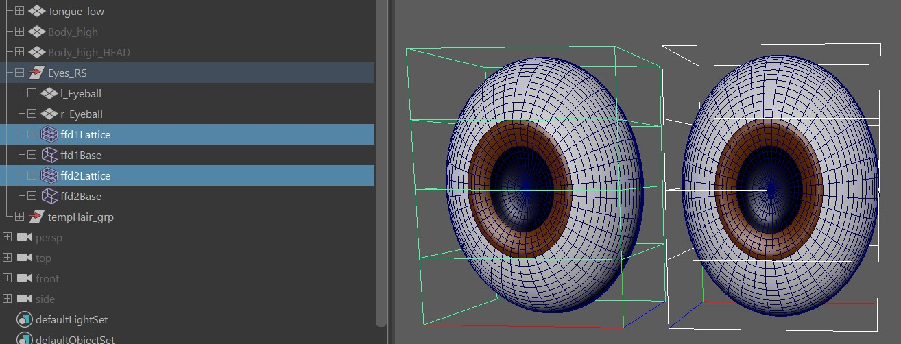

Eye Puppet Limbs
For the eyeballs you have 3 specific limbs:
- Eye
- EyesLookAt
- EyeLookAtIndiv
Usually those are already setup-ed when you copied from another character. If you do need to set them up yourself,
make sure to specify the eyes in attacher: eyes (c)
 EyeLookatIndiv is for when you have a character that has the eyes pointing sideways. In those situations the
EyesLookAt is not so great, since the main ctrl is at the front of the character.
EyeLookatIndiv is for when you have a character that has the eyes pointing sideways. In those situations the
EyesLookAt is not so great, since the main ctrl is at the front of the character.
Once you've got the right setup in there, all you need to do is place the blueprints.
And make sure that the polevector in the BP Rig is pointing downwards. Otherwise you'll get troubles later with the
eyelid behavior.
Iris and Pupil
The EyesLookat limb also comes with IrisScale and PupilScale attributes.
They reason why they are on the EyesLookat limb is because those have the ctrls for scaling them:
scaleX/scaleY for Iris, and scaleZ for Pupil.
 Make sure to skin the jnt_l_eyeIris and jnt_l_eyePupil joints!
Make sure to skin the jnt_l_eyeIris and jnt_l_eyePupil joints!
Eyelids
If you didn't add the facePro python file, add it now as shown in faceGeneral (facePro_v18.py at the time of this writing).
Base Ctrls
The function baseLidCtrls() just creates those three arrow ctrls. Those are being used for all setup, no matter
if simple lid joints, blendShapes or splines.

To get a good rom, apply rom_eyes.anim, which you'll find in almost every character at Export -> Anim.
But at this point the eyelids are not moving yet. For them to move, you'll hvae to either do simpleLidSetup() (Simple Lid Joints) or splineLidSetup() (Eyelid Splines)
Simple Lid Joints
Create and Skin
If you turn on the function simpleLidSetup(), you'll get mainly 2 joints for each eye jnt_l_eyeBlinkBot and jnt_l_eyeBlinkTop, and a few pose groups (siblings) that define in which poses the joints should be as you move the arrow ctrls created in Base Ctrls:
After you've run that function, skin the joints. Don't worry if it doesn't look good yet on the blink, for that you'll need to set the slibling transforms.
Skin Weights
When you are skinning the eyelids, be careful with the smooth tool - you don't want upper eyelid to affect the lower one or other way around.
Sibling Transforms
Those are transforms that you can move around, and they define the poses of the lid joints (jnt_l_eyeBlinkBot and jnt_l_eyeBlinkTop),
being posed by the arrow ctrls (blink, wide, upperLidUp, upperLidDown, ...).
They work with a similar concept as the poseLocators you see in lots of other functions.
Locate them by clicking the button Select Sibling Transforms:

And then just place them, as you go through the rom that you applied:

Many times you can get perfectly looking blinks using a combination of good skinning and well placed Sibling Transforms. But it's not always the case. In some cases you'll hit limits where you have to add blendShapes on top.
Eyelid BlendShapes
The blendShapesAndSliders() function is using the blendShapes mentioned below.
blink_l_ctrl is triggering the following blendShapes:
blink
eyeWide
upCurveBlink (for some cartoony characters, creates **upCurveBlink** attribute on the blink_l_ctrl)
lidBot_l_ctrl and lidTop_l_ctrl are triggering the following ones:
eyeUpperUp
eyeUpperDown
eyeLowerUp
eyeLowerDown
Tip
While those blendShapes could be applied without a joint setup, it's recommended to run at least the simpleLidSetup() Joints. Because if you do a blendShape alone, a blink might be too linear and without inbetweens giving intersections with the eyeballs very quickly.
When the eyeballs are looking into different directions, those blendshapes are being triggered:
eyelookUp
eyelookDown
eyelookLeft
eyelookRight
More Correctives...
If you are doing Eyelid Splines, there are some more options of correctives. They are explained in Eyelid Splines - BlendShape Correctives.
Eyelid Splines
The function splineLidSetup() is creating splines that take care of a proper blink using some additional joints:
Too many Joints?
If you have a very dense character where a joint for each verterx on the loop is too much, you can set the
attribute iSkipSplineJoints to a higher value. In here I have it at 2, means he always does every 3rd joint:

You'll see there's quite a few chapters just for the Eyelid Splines, but 90 % of the time just the first sections
are required. And actually sometimes it doesn't take more than 5 minutes to get nice Eyelid Spline Setup.
But in some cases where you need to go more detail, you have the tools for it.
Eyelid Splines - Creating the Blueprints
This function needs some extra blueprints, but they are easy to create.
Select a vertex along the edge of the eyelids:

Then click the button Create Left Curve and Locators:
And you'll get this curve and two locators:

Those locators need to be at the inner and outer corners. Those are basically what cuts the lid into lower lid
and upper lid. Always check if the locators are placed properly, the tool doesn't always do that correctly.
Ignore the hole in the curve
See how there's a hole in the curve, in this case at the upper right side? That's fine, because this curve is not being used for the setup, it's only to indicate where the actual setup curve should be when building.
Eyelid Splines - SkinCluster
Next thing is run until loadDeformers(). Theoretically you could also Run All, but it's not needed.
Note
Remember the Selection Templates from the builder? This is where they come in handy.
Select the mesh, and click ==BIND== -> bind to joints on selected mesh.
Under the hood this is running the Closest Expand SkinCluster Tool, and the
values in the iBindRows attribute ([2,3] by default) are the Expanded Full Weight Loops and Expanded Fade Out Loops.
And then test it using the Blink Ctrl:

If you find that the skinning needs more or less influence, just adjust the iBindRows attribute. Sometimes before running
the tool again, it might be good to move the weights back to the jnt_m_headMain first. There's an option for it under the ==BIND== button.
Maybe you are done now!
In many cases if you got until here, you can call it done. But sometimes you need higher fidelity, and there's still more things you can do. Just keep reading here.
Eyelid Splines - Finetune the Ctrls
The light blue ctrls are manipulating the spline directly:
If you don't like their influences, you can play around with
iCtrlSmoothIterations. Whenever you modify this value, you'll need to rebuild to see the results.
For even more precision you can also adjust the weights directly
on the skinClusters skinCluster__curve_l_topCombined__CTRLS and skinCluster__curve_l_topCombined__CORNERCTRLS of the curve_l_topCombined curve.

Make sure you export the weights of those curves! When you click Export -> Deformers on those curves, you'll notice he
exports all three skinClusters. You could theoretically delete the 2 unchanged ones, but they don't cause many issues if you leave them.
Eyelid Splines - Zipper
The splineLidSetup() function also comes with a bZipper attribute.

Is it useful??
Animators are very divided on this, feel free to checkout this LinkedIn discussion or even put your opinion out there: LinkedIn Post on EyelidZipper
Eyelid Splines - Passer Values
On the passer of the blink_l_ctrl you can find those attributes. Close the eyelid and experiment with them.

Mirroring and Saving those values happens with the ** === DEFAULT ATTRS === ** button.
And the attribute where they get saved to is dDefaultSettingValuesSplineLids.
Eyelid Splines - Poses with Locators
You'll see a locator for each light blue cube ctrl called for example _poseLoc__eyeSplineBotA_l__blink
When the eyelid is in a blink state, just move around the locator to adjust the pose a bit.

It's a great way to make sure the lid is fully closed in case the passer attribute overShootOnBlinkFactor is not enough.
Those locators are basically just get activated when blink_l_ctrl.ty is -1.0.
If you want to get more in detail with poseLocators, you can also go to any pose using the blink_l_ctrl or the other
two arrow ctrls, and click Generate PoseLoc at Current LidPosition.
This creates extra locators that you can modify.
Saving the PoseLocs works with the Fill PoseLocs button. If you want to get rid of some of the extra poseLocs, don't delete them directly, since this would break the setup. Instead adjust the ddPoses attribute (make sure to use the JSON Editor) and rebuild.
Warning
Very often we create the additional pose on the pose where the upper eyelid is fully down, using the lidTop_l_ctrl. If you set this ctrl pose to NOT be fully down, in the end it will fade back to default when the ctrl is fully down. Which can be unwanted behavior.
extra control on lids open widely
When you run the eyelid spline function, you'll get those extra curves:

Those just specify how the lids behave when they get opened wider.
If you want to finetune those, you'll more likely want to set the bLipsCanPushOut value to True, otherwise
the lips will always be constraint onto the eyeballs
Eyelid Splines - Wide Target Curves
After running that function you can see that it created those target curves:
Those are for when the lids move apart. You can adjust those and export.
But keep in mind you might not see much difference unless you set the bLipsCanPushOut attribute to True.
Eyelid Splines - BlendShape Correctives
If the PoseLocs are not enough, you can also go more in detail with sculpting shapes. For that the Shape Editor
needs to be understood.
When you are using the Shape Editor, many times doing the usual blendShapes mentioned above like blink are already
enough. But you can go move into detail:
You could create a splineLidCorrective* target, that works with a similar timing as the PoseLocs mentioned above.
For that, open the blendShape file, reference the latest rig in the Shape Editor:
And add a new Target as shown in this video:
The names of the newly generated target might sound a little technical. That's just because it's trying to fit a lot of
information into the target name. Basically it's having the lowerlid position and upperlid position in
percentage separated by X. And if there's an n before a number, it means the number is negative.
"splineLidCorrectiveX030X" = lower lid 30 % up, nothing is after the second X therefore no pose for upper lid
"splineLidCorrectiveX010X089" = lower lid is 10 % up and upperlid is 89 % down.
If you have 2 poses (lower and upper), then it's spliting those in the blendShapesAndSliders() function, using the skinCluster weights.
Tip
The lower lid up as shown in the gif above is actually very common. Often we add that shape but keep it unchanged, just to create a combo with the squint.
Eye Lid Follow
When you are moving around the eye aim ctrls, the lids follow, and animators can adjust it with the eyesLookAt_l_ctrl.lidFollow attribute.
This is all happening by default, and in most cases the default is good. But sometimes not, and you have to fine tune things. This section explains where to find all the components.
Changing the default happens in the EyesLookatLimb:

How this affects the eyelids depends on how you've set them up.
If you've done Simple Lid Joints, it's moving around the lid joints based on the Sibling Transforms
with the Extra name in there.
If you've done Eyelid Splines, it's rotating the splines up/down.
You can also add blendShapes to the eyes, with the eyeLook.. targets:
eyelookUp
eyelookDown
eyelookLeft
eyelookRight
Note
If you add those blendShape targets, animators can tune adjust their strength with the eyesLookAt_l_ctrl.lidFollow attribute shown above. But tuning the Lid Follow Default attribute in the Puppet tool does NOT change the behavior of the blendShapes! This is to ensure that if you want to adjust the strength for the blendShapes, you do it solely in the Shape Editor.
For most organic looking results
First just see how the default looks like, it might be enough. But then especially for more realistic looking characters, adding eyelookLeft/eyelookRight blendShape targets will give you an extra organic feel. You probably won't need the eyelookUp/eyelookDown targets.
Still want more control?
If you still want more control such as moving some eyelid ctrls - you can hook things into the
passer values of the eye aim ctrls, this is basically what the other functions are looking at:
You could for example use the Pose Editor to drive some eyelid spline or tweaker ctrls.
Eye Lattice Ctrls

Just turn on the eyeLatticeCtrls() function and specify the eyeBall geos (sLeftMeshes, sRightMeshes), and the mesh that has
the eyelid geos (sSkinMeshes).
After building, you'll have to fix the eyelid weights. It's best done with Weightmaps -> Flood and the Replace Absolute option.

And you are done. Check if the triangle ctrls are buried inside the mesh, and if they are - shape them and export ctrls.
Tweakers
If you don't have spline rig for the eyelids, animators might ask for extra ctrls since the blue arrows are not enough. See TWEAKER_lids().
Blink Line
There's an attribute on the blink_l_ctrl that can changes the blink when the eyes are closed.
Sounds simple - but how it really behaves depends on which functions you've used:
| Situation | What the blink line does |
|---|---|
| Just BlendShapes | Not doing anything |
| simpleLidSetup() | It post-rotates the eyelid joints up/down |
| splineLidSetup() | Best results |
Blink Bottom and Top Separate
Some animators want to be able to achieve a blink by adjusting upperlid and lowerlid separate.
To do that, set the bExtrasAreAlsoForBlink attribute in the BASELidCtrls() function.

This means that later the blink shape will get split into bottom and top.
If you have the function simpleLidSetup(), you can use the set extras from blink button, which will assign the values from the sibling transforms
of the blink onto the lower and upper ones:
When doing the spline rig (splineLidSetup()), moving lidTop_l_ctrl fully down, and lidBot_l_ctrl fully up will close the eye. And with the blinkLine you can control at which point they close.
Squashed Eye Balls
Kangaroo can handle squashed eye balls, but at this time only without spline rig.
The feature may seem a bit hidden, so here we explain how to set them up - basically you rig everything in unsquashed, but a lattice
box provided by the modelers is squashing the eyeballs after the skinClusters.
1. Model
The model needs to have the eyeball spherical, but with lattice box that scales them up:

So basically the modelers are adding the lattice boxes.
When you lay out the blueprints, remove the lattice boxes.
No Translate or Rotate
The lattice boxes in the model should ONLY be scaled, it cannot be translated or rotated. Modelers sometimes like to do that to save time on their side, but unfortunately this would result in bad behavior later in the rig.
2. SimpleLidSetup() function
In the SimpleLidSetup() function we'll have to tell him about the lattice with the attribute bEyeballsHaveLatticeBoxes:
Why is this happening inside the eyelid function if we are talking about eyeballs?
This is due to legacy reasons. This function used to be the specific function for eyelids on squashed eyeballs, but then later it turned out those sibling transforms where very useful for setting up behavior not only for squashed eyelids. Then it became the main function used for all types of eyeballs.
3. Activation Function
Make sure the activateEyeSQUASHED function is on:
4. Deformer order
After skinning the eyeballs, you may have to change the deformer order to have the lattice box deformers (ffd)
after the skinClusters. After fixing the order, just export the deformers and it'll remember the deformer order.
And that's it for squashed eye balls. For setting up the eyelids, you can just use the simpleLidSetup() and/or blendShapes the same way as if the eye balls wouldn't be squashed.
Second Inner Eyelids (Membranes)
Some characters such as birds or dinosaurs have a membrane blink. This is what the fInnerBlink attribute is for.
If you set it to something like [0,100,0], it'll create this attribute on the blink ctrls:
And there's this new joint called jnt_l_innerEyeLid, which is under the eye main joints (jnt_l_eyeMain), and
the vector you specified ([0,100,0] in our example) is the rotation of that joint when the blink is activated.
Tip
Try to get the modelers to do the membrane mesh as spherical as possible, otherwise you'll spend a lot of time creating correctives.
Eyelashes
Eyelashes BlendShapes
For blendShapes, eyelashes should just be handled in the ShapeEditor. If you need finer ctrl, that can be handled with Puppet Tweakers.
There used to be a more specific eyelashes function for blendShape splines and maybe it'll come back in the future. But at this point for more detailed ctrls it's best to do the eyes in spline, so you can use lashesSetup_splineLid()
Eyelashes Splines
If you rigged the eyelids with splines, you can use lashesSetup_splineLid(). They have a bone for each eyelid joint,
and three ctrls for upper/lower:
The blueprints look like this:
And it can be created with those buttons:

Top and Bot means upper eyelid and lower eyelid respectively. For base curves select the vertices of the skin where the eyelashes meet the eyelid. It needs to be a continuous vertex line. And for the top curves, the tip of the eyelashes need to be selected. The vertices don't need to be in a perfect line, but the selection order is important. See how there's (TO) in the names of the buttons? That means Tracked Order.
You can add a bit of auto-movement to those ctrls with Pose Locators. It happens with those buttons:
1. Pose the eyelids using the blink_l_ctrl, lidBot_l_ctrl or lidTop_l_ctrl
2. click Generate PoseLoc at Current Lid Position
3. adjust the pose locators:
4. When you are done, click Fill PoseLocs